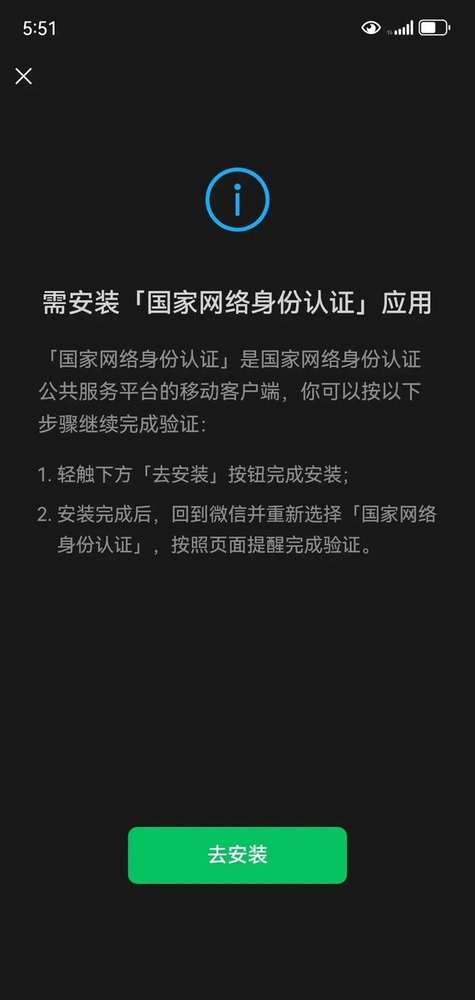
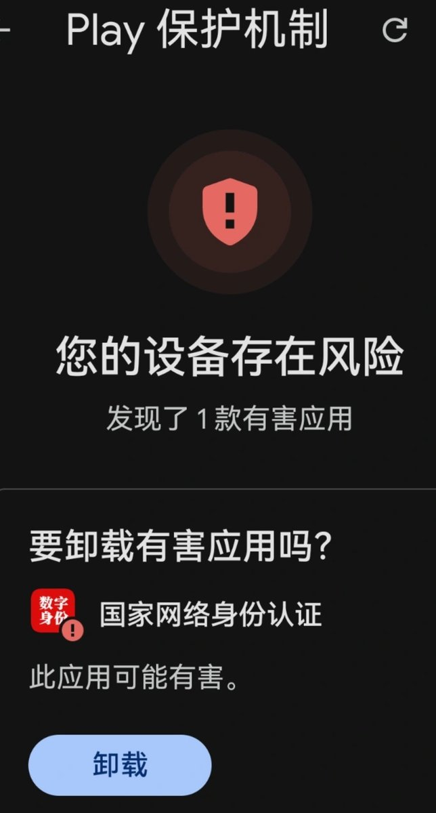

奶昔🥤
@realNyarime
@Dr_Duckter 这个可是解封微信必备神器啊


奶昔🥤
@realNyarime
微信通过好友验证弹出需下载国家网络身份认证，认证后才能通过好友，还没有其他验证方式！
绕过技巧
登录电脑微信，然后通过好友申请，这个时候会提示有安全风险，此时微信团队会下发一个链接，用手机点进去输入实名信息，然后刷脸
这样就能直接同意好友申请了，绕过下载国家网络身份 https://t.co/q5HRAzXCfe
Dr Ducky Drizzy Duckter Duckworth DingDongji
@Dr_Duckter
谁来了？ https://t.co/OthXQSCKDL